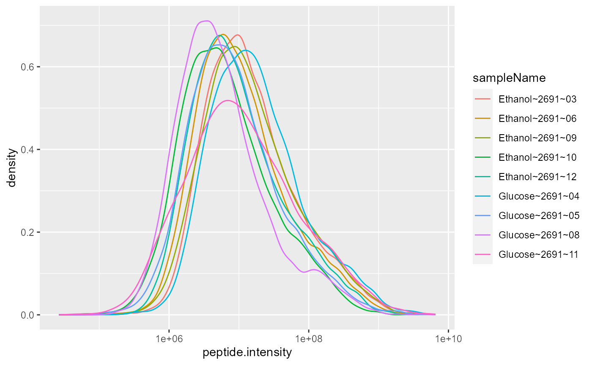
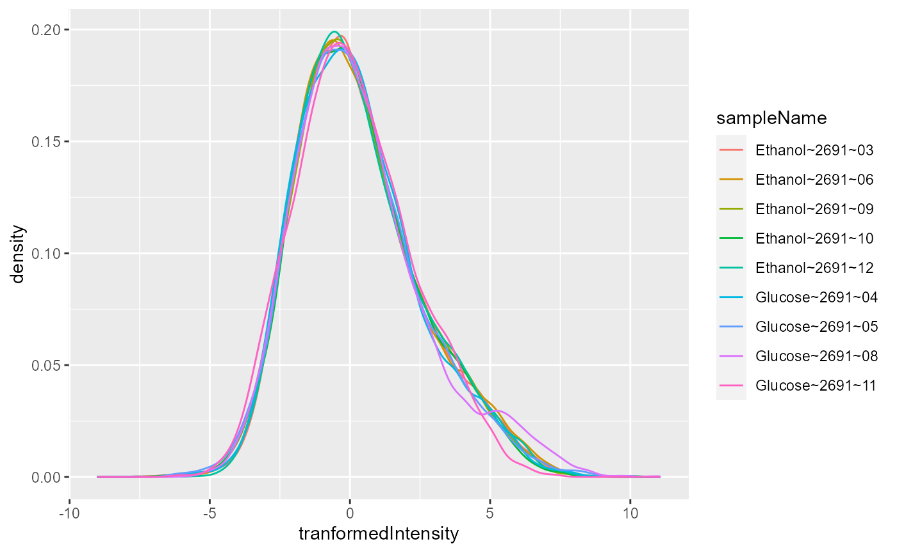
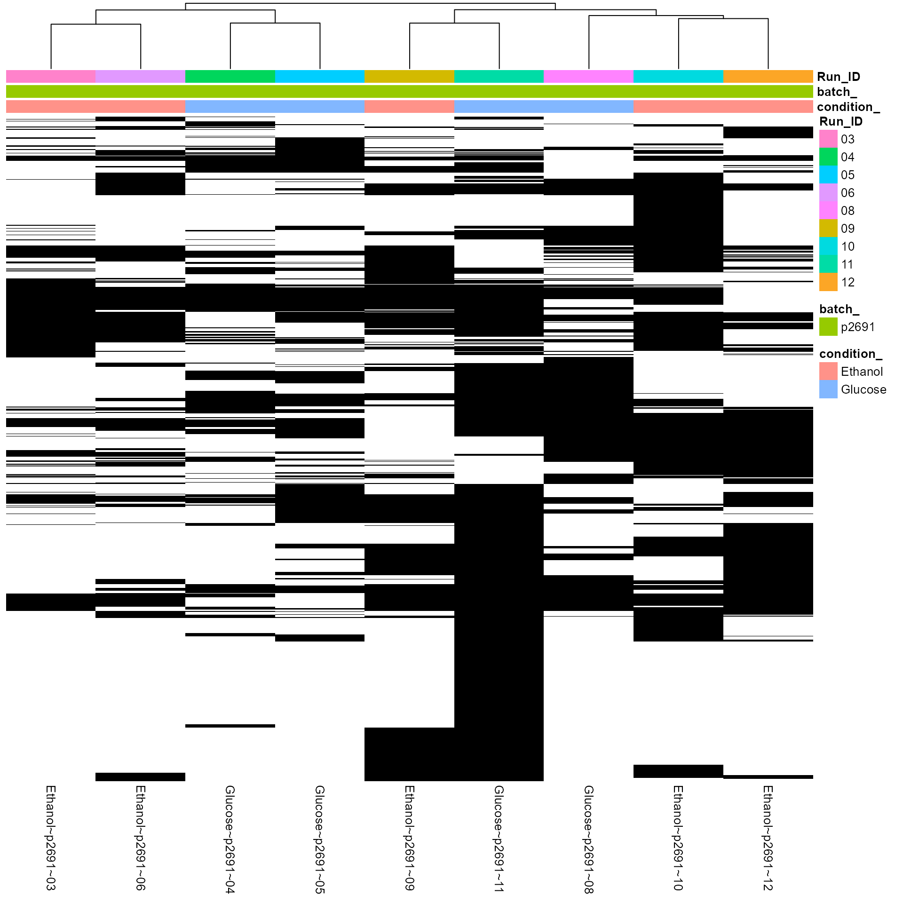
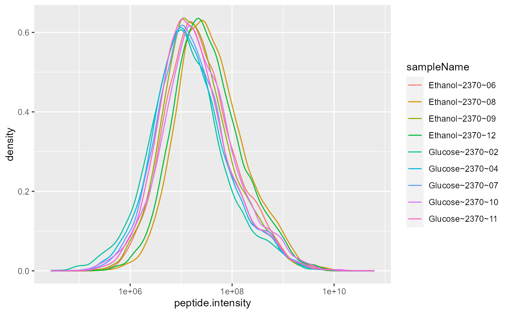
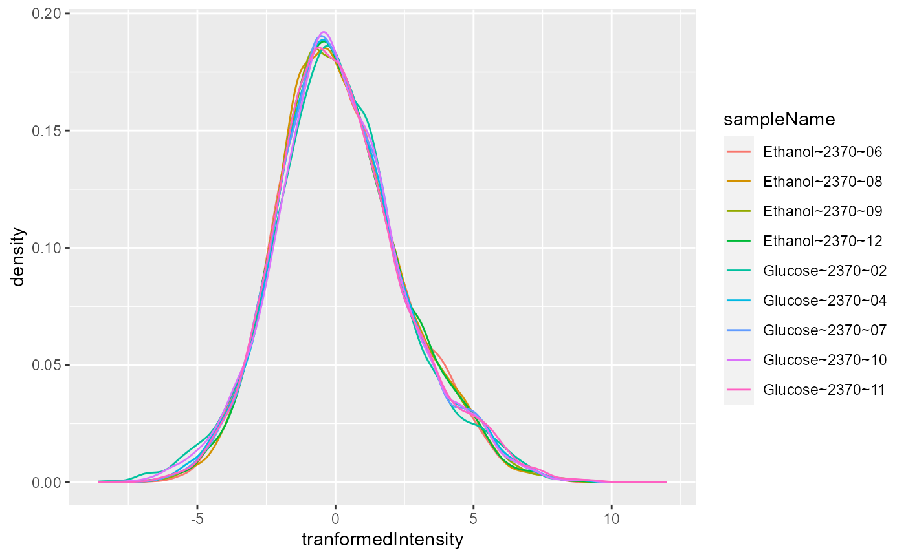
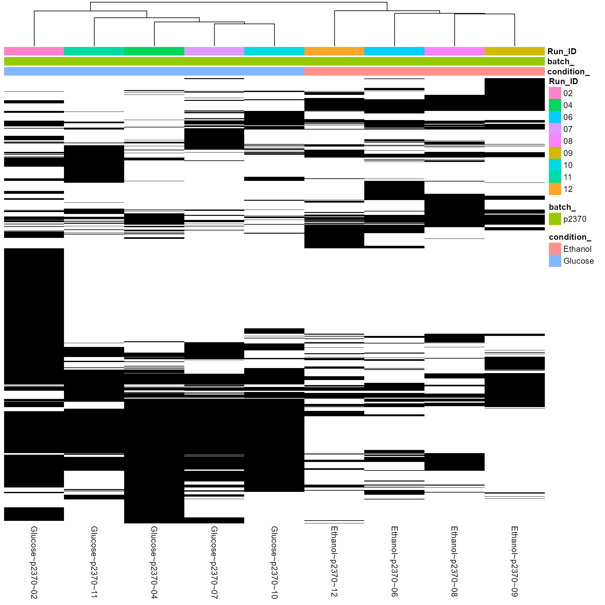
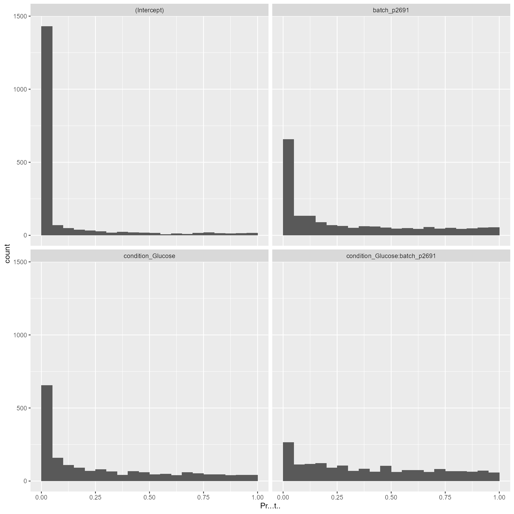
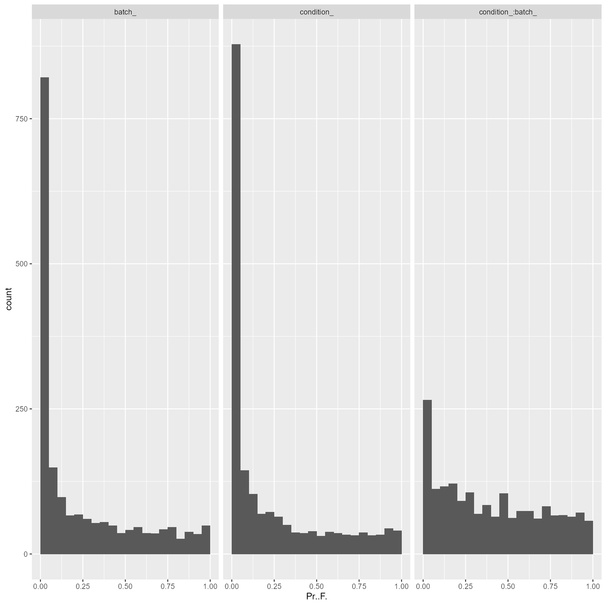
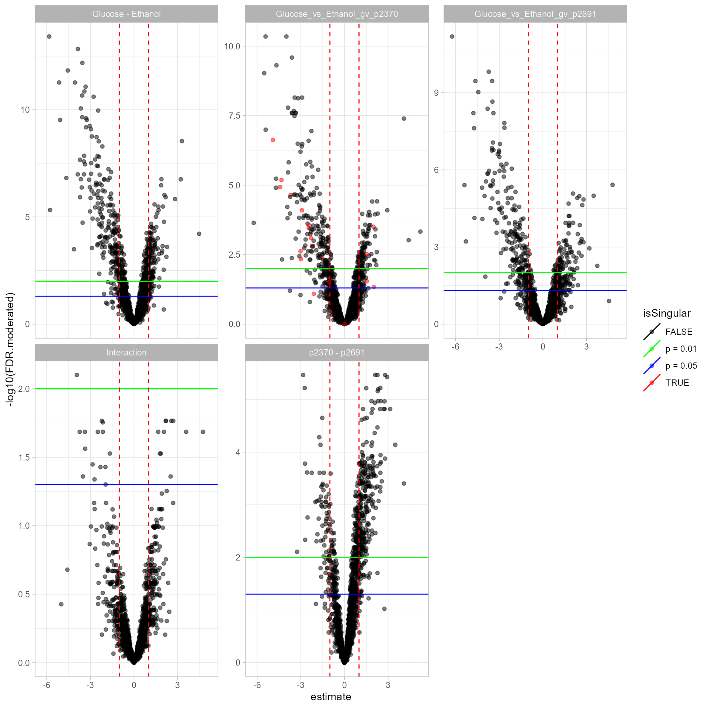
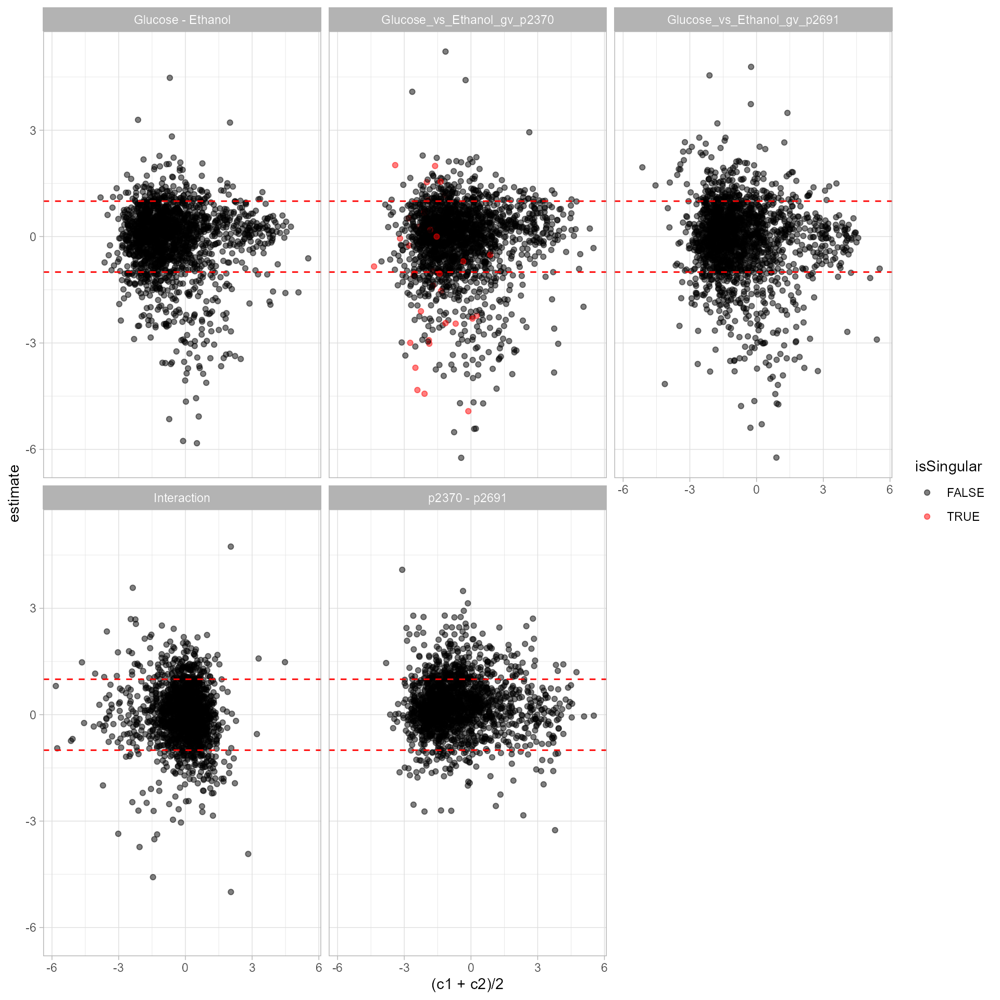

Data Preprocessing of Yeast data from the Combined Course FGCZ
Witold Wolski
06/10/2020
Source:vignettes/YeastDataSetup.Rmd
YeastDataSetup.RmdCreate MaxQuant Configuration (only works with prolfqua::tidyMQ_Peptides function)
Prepare p2691 dataset
Add annotation information data to configuration and data.
Preprocess and normalize data.


missing value heatmap for project 2691
Prepare p2370 dataset
Code snipped below shows how to add annotation to the data and configuration.


Intensity distribution after normalization, p2370

Heatmap of missing values p2370.
Merge both dataset
To simulate a factorial design we merge both datasets.
## [1] 0## [1] 0
Model Fitting
## [1] "medpolish"## # A tibble: 5,506 x 10
## # Groups: factor [3]
## protein_Id isSingular nrcoef factor Df Sum.Sq Mean.Sq F.value Pr..F.
## <chr> <lgl> <int> <chr> <int> <dbl> <dbl> <dbl> <dbl>
## 1 CON__P074~ FALSE 4 condi~ 1 2.17e+1 2.17e+1 4.63e+0 0.0493
## 2 CON__P074~ FALSE 4 batch_ 1 4.71e+1 4.71e+1 1.01e+1 0.00674
## 3 CON__P074~ FALSE 4 condi~ 1 5.10e+0 5.10e+0 1.09e+0 0.314
## 4 CON__Q86Y~ FALSE 4 condi~ 1 1.44e+0 1.44e+0 6.55e-1 0.435
## 5 CON__Q86Y~ FALSE 4 batch_ 1 2.83e-3 2.83e-3 1.29e-3 0.972
## 6 CON__Q86Y~ FALSE 4 condi~ 1 5.42e+0 5.42e+0 2.47e+0 0.145
## 7 REV__sp|P~ FALSE 4 condi~ 1 7.51e-1 7.51e-1 1.50e+0 0.249
## 8 REV__sp|P~ FALSE 4 batch_ 1 9.44e-1 9.44e-1 1.88e+0 0.200
## 9 REV__sp|P~ FALSE 4 condi~ 1 4.72e-1 4.72e-1 9.40e-1 0.355
## 10 REV__sp|P~ FALSE 4 condi~ 1 7.02e-1 7.02e-1 1.30e+0 0.273
## # ... with 5,496 more rows, and 1 more variable: FDR.Pr..F. <dbl>## $plot
##
## $name
## [1] "Coef_Histogram_.pdf"## $plot
##
## $name
## [1] "Anova_p.values_.pdf"compute contrasts
## # A tibble: 5 x 3
## contrast c1 c2
## <chr> <chr> <chr>
## 1 Glucose - Ethanol condition_Glucose condition_Ethanol
## 2 p2370 - p2691 batch_p2370 batch_p2691
## 3 Glucose_vs_Ethanol_gv_p2~ condition_Glucose:batch_p~ condition_Ethanol:batch_~
## 4 Glucose_vs_Ethanol_gv_p2~ condition_Glucose:batch_p~ condition_Ethanol:batch_~
## 5 Interaction Glucose_vs_Ethanol_gv_p23~ Glucose_vs_Ethanol_gv_p2~## $FDR.moderated